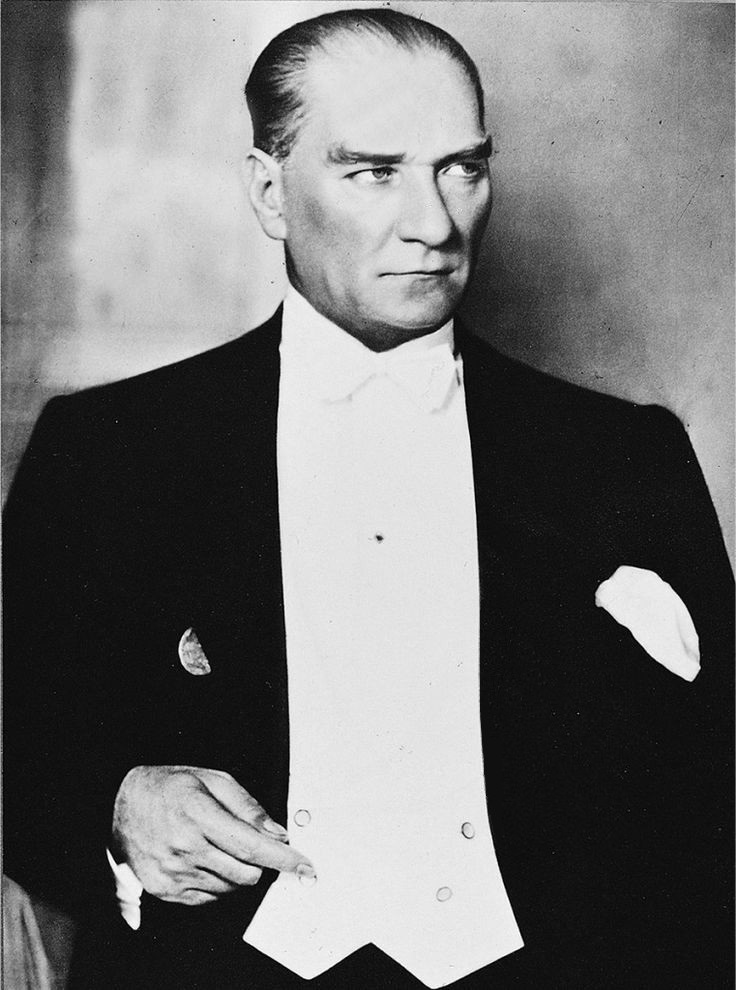
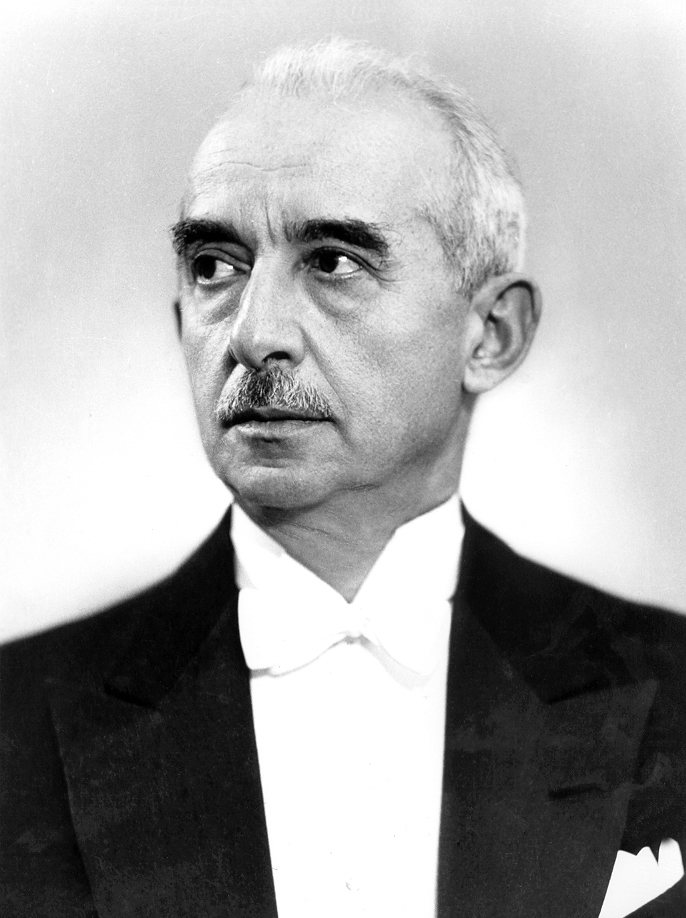

The First Three Presidents Of The Republic of Turkey
Kemal Atatürk was a Turkish field marshal, revolutionary statesman, author, and the founding father of the Republic of Turkey.
Atatürk
Mustafa İsmet İnönü; (24 September 1884 – 25 December 1973) was a Turkish general and statesman, who served as the second President of Turkey from 11 November 1938 to 22 May 1950, and its Prime Minister three times: from 1923 to 1924, 1925 to 1937, and 1961 to 1965.
İsmet İnönü
Mahmut Celâl Bayar (16 May 1883 – 22 August 1986)[1][2] was a Turkish economist and politician who was the third President of Turkey from 1950 to 1960; previously he was Prime Minister of Turkey from 1937 to 1939.
Celal Bayar